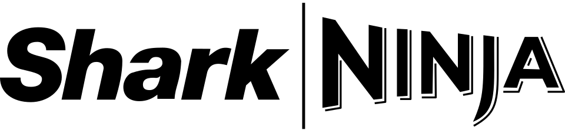
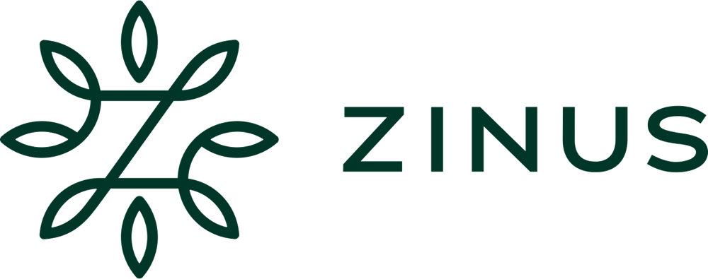
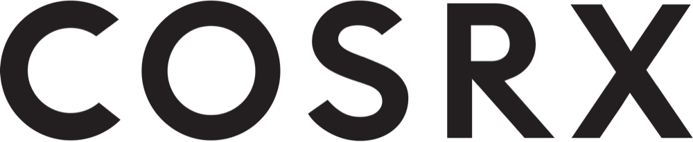
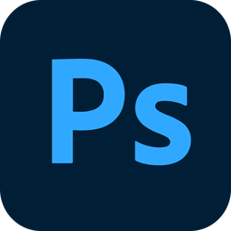

About
가설을 세워 테스트하고,
진 결과까지 판정으로 남깁니다.
이엠넷에서 2년간 브랜드 3사를 운영하며 월 1억에서 6억대 예산을 다뤘습니다. 소재와 타겟을 축으로 나눠 같은 조건에서 비교하고, 이긴 것은 상시로 올리고 진 것은 제외 액션으로 확정했습니다. 판단을 계정에 남기는 방식입니다.
구병기
퍼포먼스 마케터
010-6340-3531
ncsp@kakao.com
이엠넷 · 2024.09 – 현재
ncsp@kakao.com
이엠넷 · 2024.09 – 현재
패션홈퍼니싱
가전뷰티
담당 브랜드 운영
브랜드 3사 운영 + 데이터 협력 2사 · 월 1억 – 6억+
2024.09
2025.03
2025.09
2026.03
2026.08
월 6억+약 1년 · 패션

월 1억약 5개월 · 가전

월 2억+홈퍼니싱
월 광고비 운용 규모 · 근사 기준
협력 프로젝트
 데이터 자동화 · 리뷰 분석
데이터 자동화 · 리뷰 분석

Toolkit
Media & Ads
브랜딩 · 퍼포먼스 상시 운영
Design & Video

소재 제작 · 영상 편집
Data
GA4 · GTM · BigQuery
Work & AI
Notion · Claude · VS Code